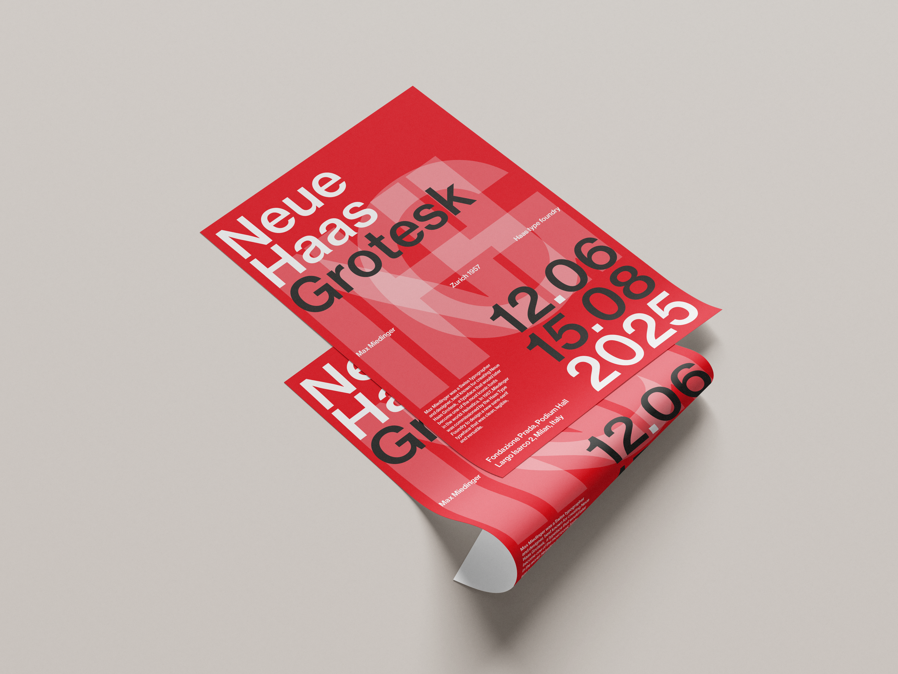
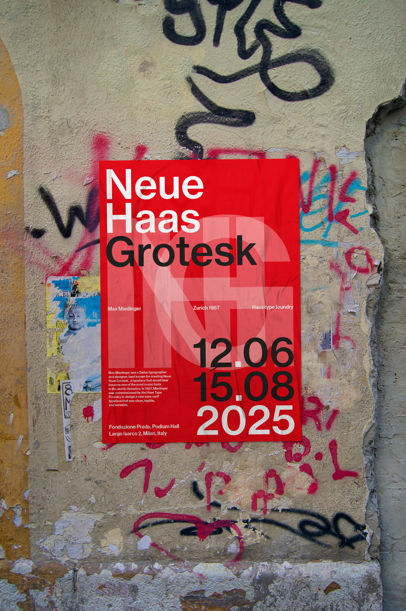
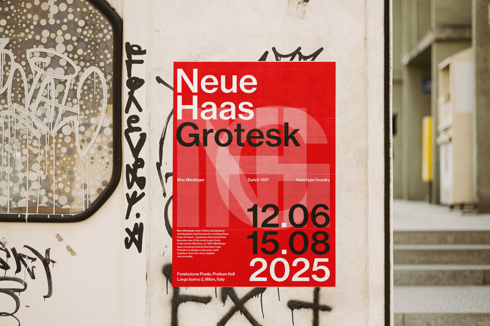

This typographic project explores the formal purity and historical significance of Neue Haas Grotesk through the design of a curated exhibition poster. Acting as a tribute to one of the most influential typefaces in modern history, the work synthesizes key archival data—creation year, authorship, and geographical origins—into a cohesive visual narrative. The project is conceptually framed within a simulated exhibition at the Fondazione Prada in Milan, bridging the gap between historical typographic study and contemporary cultural spaces.



We divided the work into two main parts. Initially, we researched and selected the texts and historical data relating to the typeface. We then transformed this information into a graphic poster, imagining how it would look within a real contemporary art exhibition. Our aim was to make the typeface the true protagonist of the image, going beyond its simple function as text.
For the poster’s style, we followed the principles of ‘Swiss graphic design’: order, precision and a visual hierarchy that guides the eye towards the most important information. We chose to avoid superfluous decoration, basing the entire composition on the font’s geometry and the rational arrangement of elements within the space, so as to make the message immediate and professional.
As for the colours, we decided to limit the palette to white, red and black. This choice evokes the classic posters of modern Swiss design and reinforces the visual impact of the project. The final result is a minimalist poster that conveys elegance and solidity, demonstrating how a typeface created decades ago remains relevant today and capable of lending a strong identity to a communication project.